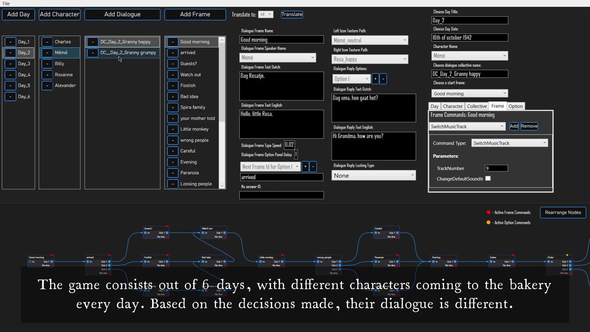

Hidden Heroes

Hidden Heroes is an isometric game, commissioned to be created by a museum in Nazareth De Pinte.
Having a branching narrative, the story revolves around a girl that tries to survive during German occupation, while hiding a jewish family.
During my work on this project I was in charge of creating a specialized tool for our writer, allowing for an easy change of game story.
The tool included a node graph for dialogues, possibility to change expressions and write game-altering commands so the dialogue was responsive in game.
